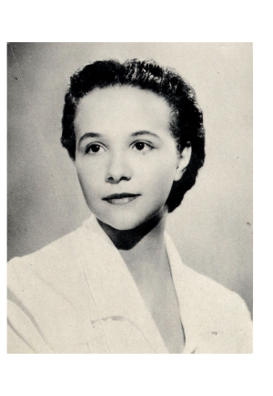
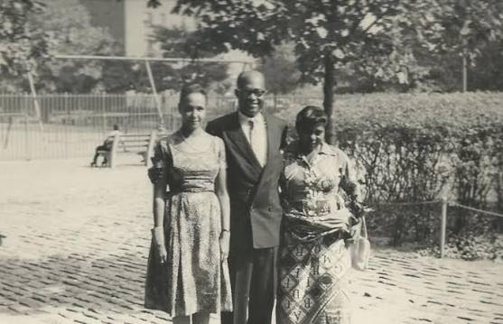
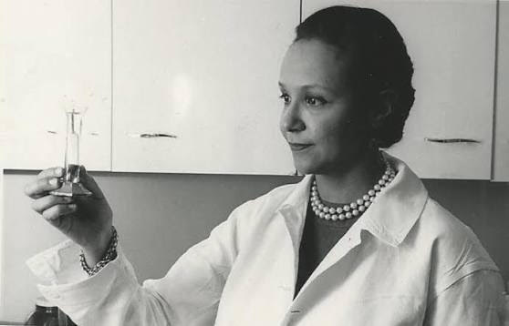
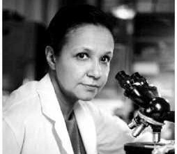

Conheça a história inspiradora da Dra. Jane Cooke Wright, a médica e cientista negra que revolucionou as pesquisas oncológicas, transformou o tratamento do câncer de mama e abriu caminhos para a equidade na ciência global.

A Dra. Jane Cooke Wright (1919–2013) foi uma médica oncologista e cirurgiã norte-americana que viveu até os 93 anos. Ela transformou a quimioterapia de um recurso experimental de último caso em um pilar da oncologia moderna. Ao introduzir novas tecnologias, transformou um tratamento antes altamente tóxico, baseado em tentativa e erro, em dosagens seguras e eficazes, poupando a vida de milhares de pessoas e aliviando o seu sofrimento.
Sua maior contribuição foi transformar a quimioterapia de um tratamento experimental de última hora em uma arma de precisão testada em tecidos vivos, salvando milhões de lives na luta contra o câncer de mama e tumores sólidos.]
Durante sua formação no New York Medical College, a Dra. Jane Cooke Wright destacou-se por seu excepcional desempenho acadêmico, concluindo a graduação em medicina com honras em 1945, aos 26 anos. Essa distinção refletia sua precisão intelectual e dedicação à ciência, preparando o terreno para que suas descobertas e pesquisas revolucionárias fossem desenvolvidas nos anos seguintes.
Após se graduar, a Dra. Wright iniciou seus estudos clínicos junto de seu pai, o Dr. Louis Tompkins Wright, no Harlem Hospital Cancer Research Foundation, liderando as primeiras análises sistemáticas de drogas contra o câncer e investigando novos compostos químicos que auxiliariam no combate aos tumores. Logo após seu pioneirismo em pesquisas contra a doença demonstrado na fundação e a morte de seu pai em 1952, Jane assumiu a direção do centro de pesquisas aos 33 anos, consolidando suas especializações e impulsionando inovações que mudariam o rumo da oncologia.
No ano de 1971, a Dra. Jane Cooke Wright conquistou mais um marco histórico ao ser eleita a primeira mulher a ser presidente da New York Cancer Society (NYCC). Esse feito foi um grande reconhecimento em sua carreira profissional, fruto direto de sua liderança visionária, do seu pioneirismo nas análises de oncologia e de suas contribuições fundamentais para a luta contra o câncer e o tratamento da doença. A conquista trouxe a quebra da barreira de gênero no topo das instituições médicas, consolidando seu nome como uma das figuras mais respeitadas e influentes de sua época. Muito além disso, representou um marco histórico na superação das desigualdades de gênero e raça, provando que a excelência, o foco e a determinação abrem caminhos para que todos construam um futuro brilhante.

Nascida em Manhattan, Nova York, em 30 de novembro de 1919, Jane Cooke Wright cresceu em um lar marcado pelo conhecimento e pelo compromisso com a excelência. Em uma época onde pessoas negras tinham pouco acesso ao ensino superior, sofrendo severas restrições, a família Wright construiu um feito fantástico: uma linhagem dedicada à medicina. Seu avô, Cinch Arthur Cooke, nasceu sob a escravidão e, após a Guerra Civil, graduou-se como médico no Meharry Medical College. Seu pai, o Dr. Louis Tompkins Wright, foi um dos primeiros homens negros a se formar na Harvard Medical School e tornou-se um prestigiado cirurgião e ativista dos direitos civis. Criada ao lado de sua irmã Corinne, que no futuro também se tornou médica, Jane frequentou a renomada escola privada Ethical Culture Fieldston School. Embora demonstrasse um grande apreço pelas artes visuais e pela natação durante sua juventude, o exemplo de seu pai e a precisão intelectual em sua casa falaram mais alto. Em 1942, ela se formou em Artes pelo Smith College, mas logo mudou seu rumo para a vocação familiar, ingressando no New York Medical College com bolsa de estudos e concluindo a graduação em medicina com honras em 1945.

Jane foi pioneira ao testar quimioterápicos in vitro em tecidos tumorais extraídos de pacientes. O resultado disso eliminou a prática de tentativas e erros, permitindo escolher o remédio mais eficaz e com menos efeitos colaterais. Ela demonstrou o êxito do metotrexato contra o câncer de mama e desenvolveu o uso de cateteres para injetar diretamente a quimioterapia em órgãos específicos, evitando a toxicidade no resto do corpo. No ano de 1964, ela foi a única mulher entre os sete fundadores da American Society of Clinical Oncology, hoje a maior instituição de oncologia do mundo inteiro. No mesmo ano, foi nomeada pelo presidente Lyndon Johnson para a comissão presidencial de saúde. Tornou-se, em 1967, reitora associada do New York Medical College, o mais alto cargo ocupado por uma médica afro-americana nos EUA até então.Principais correções aplicadas:

Os impactos das inovações da Dra. Jane Cooke Wright repercutem até os dias de hoje em hospitais e centros de pesquisa por todo o planeta. Ao transformar a quimioterapia em uma medicina mais segura e precisa e cofundar a American Society of Clinical Oncology (ASCO), ela estabeleceu as bases da oncologia moderna, trazendo a ela novas tecnologias que mudaram seu rumo, poupando a vida de milhares de pessoas e permitindo que outros cientistas do mundo todo usem de sua descoberta para compartilharem avanços no combate ao câncer. Além de suas conquistas científicas, durante sua trajetória ela tornou-se um símbolo global de superação e liderança. Ao quebrar barreiras históricas de gênero e raça na medicina acadêmica, a Dra. Jane inspirou gerações de mulheres e cientistas negros, deixando um legado eterno de dedicação, equidade e avanço científico no tratamento da doença.
Este projeto celebra a intersecção entre a memória da Consciência Negra e o Outubro Rosa por meio da cientista que redefiniu a oncologia de precisão. Feito por: Ryan Assis, Nicolle Oliveira e Liana Gabriella do 1º L de IA